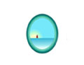
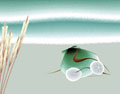

The Open Gallery
click thumbnail for full size image These six images are from a series called "Down the Beach". It is Steve Smyth's first foray into digital art. "The subject matter is near and dear to my heart, following a lifetime spent around the ocean, building and repairing wooden boats. Ten years ago, at age 50, injuries, and my own foolishness brought me to the point of considering a new career. What could be more sensible than delving into the new field of Computer Art? Piece of cake, eh? Transition smoothly from a dying art to an emerging one...all in one fell swoop. Click a few buttons, move some things around on screen, print, and Voila...ART.
Steve Smyth


"Whoa! This is more involved than it looks. But not nearly as involved as describing/explaining what it is I have been up to for these ten years... even total computer geeks don't really know what Digital Art is...the general/buying public must be totally lost. So I offer this work for your perusal, commentary, and enjoyment...in the hope that I can contribute something new to the mix, and between us, we can figger out some way to get Folks to appreciate what it is we do. I prefer the term Computer Artistry, by the way...it's more user friendly...less threatening to a novice/potential purchaser...don'tcha think?"